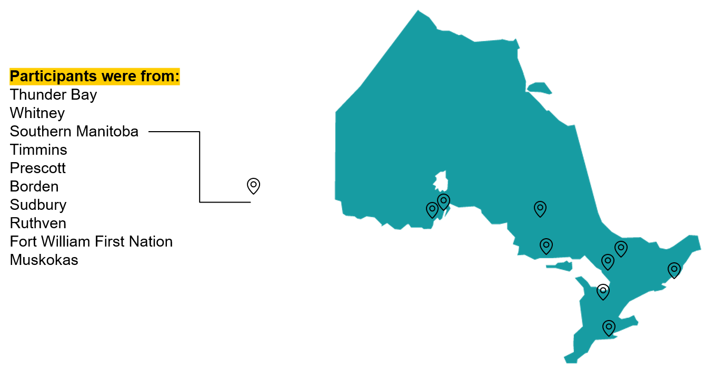
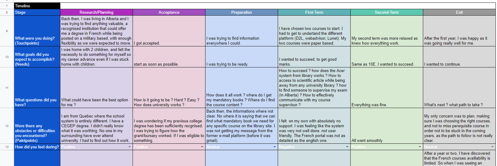
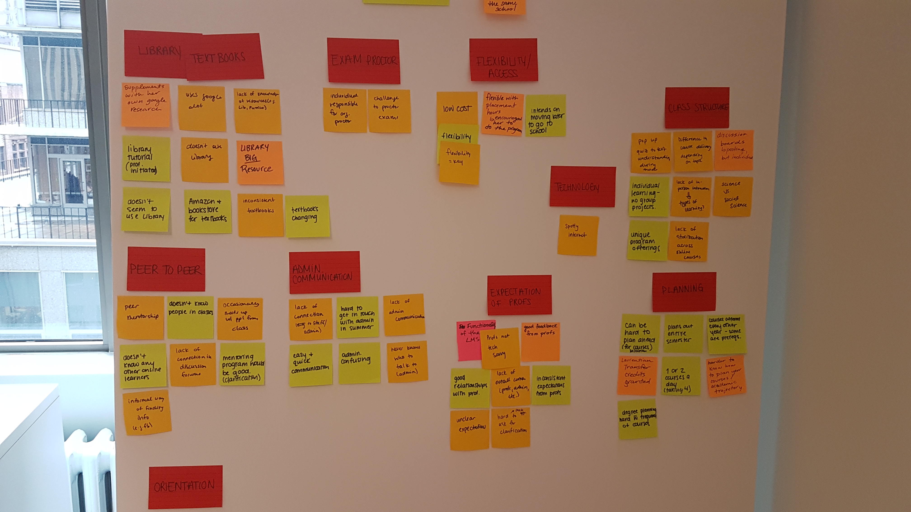
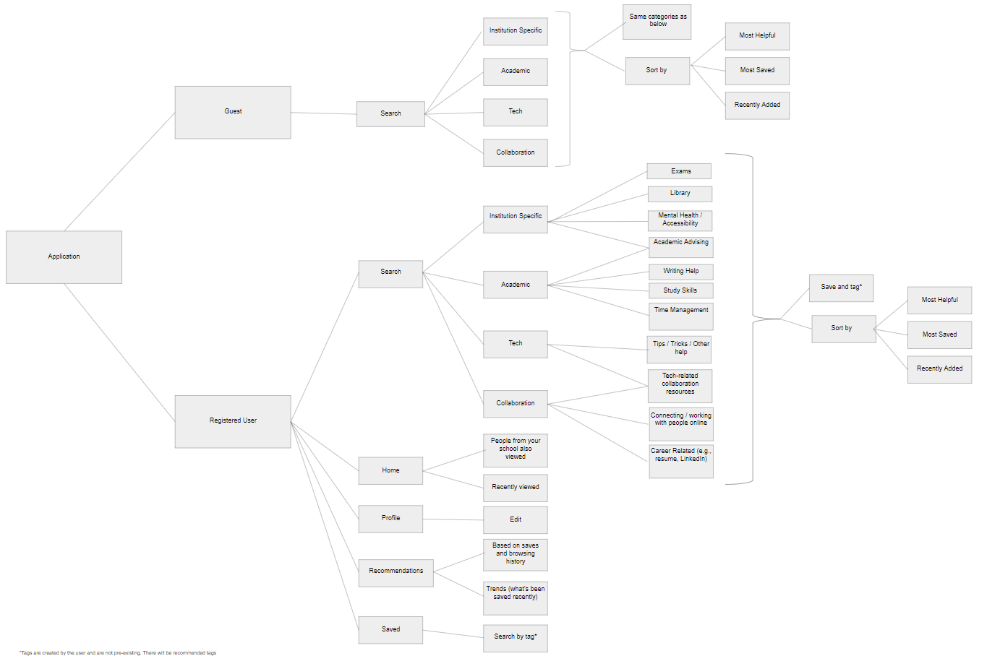
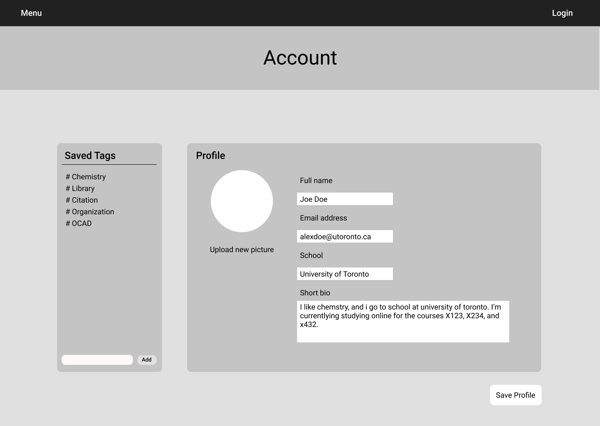

Background
The Northern and Remote project looked at enhancing the post-secondary educational journey for northern and remote online learners. Students who choose to study online are faced with unique academic challenges that they often have to overcome on an individual basis. Using inclusive design processes, we aimed at creating value in a tool designed for academic success and encourage collaboration amongst peers.
1/3 of All Students Are Online
Research conducted by the cohort prior identified the demographic of online and remote learners across Ontario. They found that there were 12,728 online courses, 809 online programs, and 360,000 online students, which makes up 29% of all postsecondary students in Ontario.
Despite being remote to their respective universities and colleges, their responsibilities, be it work or family, also kept them at home. There was an opportunity to optimize and streamline the academic resources available to online learners, and provide chances for structured collaboration between peers.
Province-Wide Interviews With Students

Map showing locations of interview participants
To understand the root problems and challenges online and remote learners faced, we conducted discovery research through structured one-on-one interviews with current online or remote students. We targeted our recruitment towards students from northern and remote communities in Ontario.

Example of a journey map that laid out the participants first year of online learning
Through a dozen remote interviews and journey mapping exercises, we were able to identify a few common themes. As an aide for our research, we also surveyed over 50 online and remote students to gather quantitative data to further support our interview findings.

Infinity mapping and grouping our findings into themes
We found that students:
- • Lacked peer networks – people don’t talk to each other.
- • Represented a variety of age groups.
- • Lacked internet and/or technological knowledge.
- • Lived far from their respective institutions.
- • Have different educational levels and backgrounds.
- • Needed to choose own engagement levels.
We also identified that online/remote/northern students are often unaware of existing academic resources that can help ease the learning process, as well they did not have a strong support network of friends, peers, or professors.
Problem Framing and Opportunity
Based on these findings, we found that there was an opportunity to optimize and streamline the academic resources available to online learners, and provide chances for structured collaboration between peers.
How might we create value in tools and resources designed for academic success (available online or through institutions) and guide Northern and remote online learners towards them?
Design Principles
For our MVP, we narrowed our solution to focus on these principles:
- • Enables collaboration and community
- • Creates value in online educational resources
- • Choose your own level of engagement
- • Builds professional and casual relationships
Curating Education Resources
For our prototype we wanted to create a platform where students can share resources and also connect people. We want to allow students to gather, curate and share relevant articles and resources, while creating meaningful connections with peers.

A systems map created by Deanna to showcase the platform flow


Students curate their dashboard with their school-specific resources or their topics of interest


Open for guest to browse resources, or login through their school accounts to save and share resources
Project Pivot
Five months into our project we merge our team to support another team as there were a lot of overlaps within user research as well as design solutions between the two projects. This meant the end for the Northern and remote project stream, so we were not able to create an MVP or validate our prototype. Similarities in user research found that both groups of students had experienced isolation and conflicting identities, encountered barriers that made it more challenging to break cycles, and lacked general experiences within post-secondary education.
For the new project stream, instead of targeting the solution towards just Northern and remote students, we saw the new combined target demographic as underrepresented students. The new solution looked at helping students form meaningful connections with others to feel connected to their learning experience, as well as sharing experiences through connections in the form of mentorship, person to person learning, and role models.